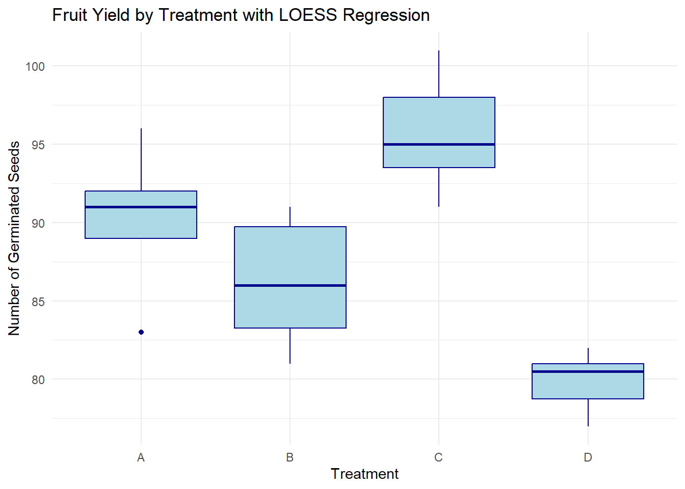

── Conflicts ────────────────────────────────────────── tidyverse_conflicts() ──
✖ dplyr::filter() masks stats::filter()
✖ dplyr::lag() masks stats::lag()
ℹ Use the conflicted package (<http://conflicted.r-lib.org/>) to force all conflicts to become errors
library(kableExtra)
Attaching package: 'kableExtra'
The following object is masked from 'package:dplyr':
group_rows
Rows: 34 Columns: 2
── Column specification ────────────────────────────────────────────────────────
Delimiter: ","
chr (1): Treatment
dbl (1): Seeds
ℹ Use `spec()` to retrieve the full column specification for this data.
ℹ Specify the column types or set `show_col_types = FALSE` to quiet this message.
grad <-read_csv("grad_school.csv")
Rows: 12 Columns: 2
── Column specification ────────────────────────────────────────────────────────
Delimiter: ","
dbl (2): GPA, GRE
ℹ Use `spec()` to retrieve the full column specification for this data.
ℹ Specify the column types or set `show_col_types = FALSE` to quiet this message.
ntu <-read_csv("ntu_data.csv")
Rows: 128 Columns: 2
── Column specification ────────────────────────────────────────────────────────
Delimiter: ","
chr (1): Treatment
dbl (1): NTU
ℹ Use `spec()` to retrieve the full column specification for this data.
ℹ Specify the column types or set `show_col_types = FALSE` to quiet this message.
The FDA has suggested a change in a medication that has been shown to have detrimental side effects in half of the patients. A clinical trial was conducted with nineteen patients; only three reported side effects. Did the change make a significant difference?
The change in medication made a significant difference in the number of students showing side effects. The p-value of the change is 0.00295, which is smaller than the accepted significance value of 0.05.
Two different environmental remediation treatments are evaluated for the impacts on turbidity (measured using the Nephelometric Turbidity Unit or NTU). For regulatory reasons, turbidity is binned into four groups based on NTU: 0-15 ntu, 16-22 ntu, 23-30 ntu, and 31+ ntu. Do both treatments have the same impact on turbidity? Explain.
Warning in chisq.test(contingency_table): Chi-squared approximation may be
incorrect
print(contingency_table)
0-15 16-22 23-30 31+
Treatment A 6 14 17 9
Treatment B 30 32 17 3
cat("Chi-Square Test Statistic:", chi_test$statistic, "\n")
Chi-Square Test Statistic: 17.28581
cat("P-value:", chi_test$p.value, "\n")
P-value: 0.0006172421
cat("Degrees of Freedom:", chi_test$parameter, "\n")
Degrees of Freedom: 3
Based on the results of the chi-squared analysis, the two treatment types do not have the same impact on turbidity. The p-value is much less than 0.05, indicating a difference in how the turbidity scores are distributed across the different categories.
A dozen graduate students tried to determine if there was a relationship between their undergraduate GPA and their scores on the Graduate Records Examination. Look at these data and determine the extent to which they are related. Explain.
Call:
lm(formula = GRE ~ GPA, data = grad)
Residuals:
Min 1Q Median 3Q Max
-57.842 -24.848 -9.777 28.297 82.827
Coefficients:
Estimate Std. Error t value Pr(>|t|)
(Intercept) 111.25 165.16 0.674 0.516
GPA 128.98 45.68 2.824 0.018 *
---
Signif. codes: 0 '***' 0.001 '**' 0.01 '*' 0.05 '.' 0.1 ' ' 1
Residual standard error: 42.65 on 10 degrees of freedom
Multiple R-squared: 0.4436, Adjusted R-squared: 0.388
F-statistic: 7.974 on 1 and 10 DF, p-value: 0.01804
# Create a scatter plot with regression lineggplot(grad, aes(x = GPA, y = GRE)) +geom_point(color ="purple") +geom_smooth(method ="lm", se =TRUE, color ="red") +labs(title ="Relationship Between GPA and GRE",x ="Undergraduate GPA",y ="GRE Score") +theme_minimal()
As illustrated in the scatter plot, there is a positive correlation between undergraduate GPA and GRE scores. The p value was 0.18, and a Pearson Correlation Coefficient of 0.66 that determines the moderate positive correlation. Meaning, the higher the undergrad GPA, the more likely it is that the student will score higher on the GRE. This highlights the importance of studying hard and getting good grades.
You are looking at fruit yield on dogwood. You designed an experiment with four different treatments and measured the total yield in germinated seeds. Are there differences in yield? Explain.
kruskal_result <-kruskal.test(Seeds ~ Treatment, data = seeds)cat("Kruskal-Wallis Test p-value:", kruskal_result$p.value, "\n")
Kruskal-Wallis Test p-value: 1.140573e-05
ggplot(seeds, aes(x = Treatment, y = Seeds)) +geom_boxplot(fill ="lightblue", color ="darkblue") +geom_smooth(method ="loess", se =TRUE, color ="red") +labs(title ="Fruit Yield by Treatment with LOESS Regression",x ="Treatment",y ="Number of Germinated Seeds") +theme_minimal()
`geom_smooth()` using formula = 'y ~ x'

Based on the results, the p value indicates that there is a significant difference in seed yields based on the germination treatment used. Treatment C yielded the highest number of germinated seeds, while treatment D yielded the lowest.
p.s. Thanks for a great class! I had never used R before this semester. I definitely struggled with the most basic things at the start, but I feel like I have a much better feel for how the nuts and bolts of it all works.